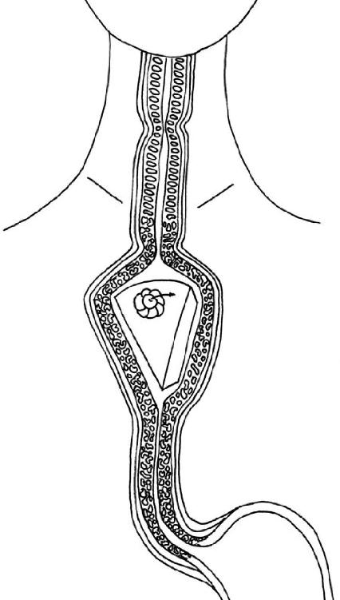
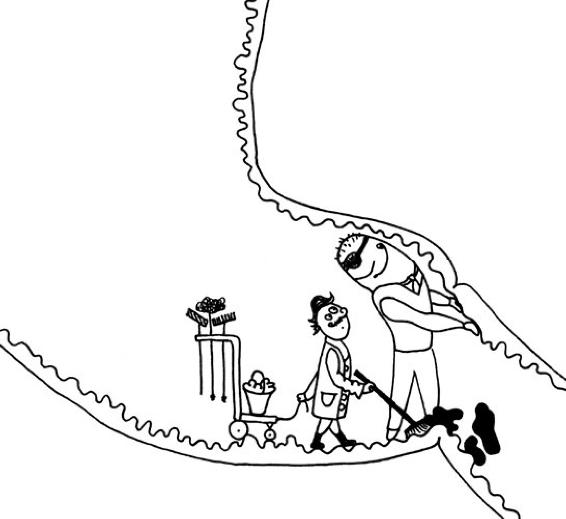

ALLOW ME TO take you on a journey. Let us accompany that piece of cake on its travels in the realm of smooth muscle.
Eyes
PARTICLES OF LIGHT bouncing off the piece of cake hit the optic nerves at the back of the eyes, generating a nerve impulse. This first impression travels right through the brain to the visual cortex at the back, just below where a high ponytail would be. There, the brain interprets the nerve impulses to form an image. It is not until that happens that we really see the piece of cake. This delicious news is then passed on to the systems that control salivation, with mouth-watering results. Similarly, the mere sight of a yummy treat also causes the stomach to produce some digestive juices in anticipation.
Nose
IF YOU STICK your finger up your nose, you will notice that the cavity continues upward far beyond the reach of your finger. This is where the olfactory nerves are, which are responsible for smelling. They are coated in a protective layer of mucus, so anything we smell must first be dissolved in that slimy substance if it is to get through to the nerves.
Olfactory nerves are specialists. There are specific receptors for a large range of individual smells. Some spend years hanging around up your nose, waiting for their chance to shine. When that single, long-awaited lily-of-the-valley scent molecule finally attaches itself, the receptor proudly calls out “lily-of-the-valley!” to the brain. Then it might be idle again for the next couple of years. (Incidentally, although we are equipped with a large number of olfactory cells, dogs have inconceivably more.)
For us to smell it, molecules from the piece of cake first have to drift into the air, to be sucked in through our nostrils as we breathe. They may be aromatic molecules of vanilla, minute plastic molecules from cheap party forks, or evaporating alcohol fragrances from the cake’s rum filling. Our olfactory organ is a royal taster with a thorough knowledge of chemistry. The closer we bring the cake-laden fork to our cake-hole, the more detached cake molecules stream into our nose. If we detect tiny traces of alcohol as the cake covers the last small gap between our fork and our mouth, we may back our arm up in suspicion to allow our eyes to inspect the cake again, just to check whether it is supposed to contain alcohol or whether the fruit in it has started to rot. With all checks passed, it’s mouth open, fork in, and let the ballet begin.
Mouth
THE MOUTH IS a place of superlatives. The most powerful muscles in our body are the jaw muscles; the body’s most flexible striated (not smooth) muscle is the tongue. Working together, they are not only incredible crunchers, they are also nimble manipulators. Another candidate for the record books is tooth enamel. Tooth enamel is the hardest substance produced by the human body. And it needs to be, since our jaws can exert a pressure of up to 180 pounds (80 kilos) on each of our molars—or approximately the weight of a grown man! When we encounter something hard in our food, we pound it with almost the equivalent force of an entire football team jumping up and down on it before we swallow it. All that power is not necessary to deal with a piece of cake—just a few girls in tutus and ballet slippers will suffice.
The tongue plays an important part in mastication. It acts like a football coach, gathering any bits of cake that may be hiding from the chewing action and guiding them back into the game. When the mouthful of cake is sufficiently mushy, it is ready for swallowing. The tongue rounds up about half an ounce (20 milliliters) of cake mush and presses it against the palate, the stage curtain of the esophagus. It works like a light switch: when the tongue presses against it, the swallowing reflex starts automatically. We close our mouth, since breathing must stop for swallowing to take place. The ball of cake mush—known medically as the bolus—now makes its way toward the pharyngeal area, and it’s time for the dancers to enter the stage and the show to start.
Pharynx
THE VELUM (OR soft palate) and the superior pharyngeal constrictor muscle are the two formations responsible for officially closing the connections to the nose. This movement is so powerful that it can be heard down the corridor and round the corner—that popping sound in the ear that often accompanies a powerful swallow. The vocal cords are silenced and have to be closed. The epiglottis rises majestically, like an orchestra conductor (you can feel it when you place a hand on your neck), the entire base of the mouth is lowered, and a powerful wave pushes the bit of cake into the esophagus, amid tumultuous applause from the salivary system.
Esophagus
THE CAKE BOLUS takes five to ten seconds to reach this stage. When we swallow, our esophagus executes a kind of stadium-style wave. On the arrival of the bolus, the esophagus widens to let it pass, closing again behind it. This prevents anything from slipping back up the wrong way.
This process is so automatic that it even works when the owner of the esophagus is standing on her head. Our piece of cake meanders in this way—oblivious to gravity—gracefully through the upper body. Break dancers would call this move The Snake or The Worm; doctors prefer to call it propulsive peristalsis. The top third of the esophagus is surrounded by striated muscle—that is why we are still aware of the cake passing through that part of the gullet. The unconscious inner world begins at the level of that small hollow you can feel at the top of your breastbone. From there on, the esophagus is made of smooth muscle.
The esophagus is sealed at the bottom end by a ring-shaped sphincter muscle. Taking its cue from the peristaltic motion above, that muscle relaxes for eight frolicsome seconds. This opens the way, allowing the piece of cake to plop unhindered into the stomach. The muscle then closes again, and normal breathing service resumes up in the pharynx.
The journey from mouth to stomach is the first act of the performance. It requires maximum concentration and good teamwork. The conscious peripheral nervous system and the unconscious autonomous nervous system must work together in perfect harmony. This cooperation must be well rehearsed. We begin practicing swallowing as unborn babies in the womb. We swallow up to one pint (half a liter) of amniotic fluid a day during this test phase. If something goes wrong at this stage, no harm is done. Since we are completely surrounded by liquid, and our lungs are full of it anyway, we are unable to choke in the normal sense.

As adults, we swallow somewhere between six hundred and two thousand times a day. And each act of swallowing involves more than twenty pairs of muscles. Despite this frequency and complexity, things rarely go wrong. In old age, we are more prone to choking. The muscles that coordinate the process may no longer work quite so precisely. The superior pharyngeal constrictor muscle might not be quite the strict timekeeper it was in its youth, or the epiglottal conductor may need the aid of a stick to climb up to the podium. Pounding someone on the back when they are choking is a well-meant gesture, but it does little more than startle the aging pharyngeal team unnecessarily. A better strategy is to seek out a speech therapist to help you whip your swallowing squad into good shape before choking attacks become too frequent.
Stomach
THE STOMACH IS much more of a mover than many people think. Shortly before our piece of cake plops in, it relaxes to accommodate it—and it can keep relaxing and stretching for as long as food keeps arriving. It will make room for as much as we can guzzle. Two pounds (one kilo) of cake about the size of a carton of milk will easily fit into this stretchable swing hammock of a stomach. Emotions like fear or stress can reduce the ability of the smooth muscle to stretch, making us feel full—or even nauseous—after eating just a small portion of food.
Once the cake arrives, the walls of the stomach speed up their movements, just like the legs of a person accelerating into a run, then—bam!—the food gets a big push. Describing an elegant arc, it is lobbed against the stomach wall, where it bounces off and plops back down. Medics call this process retropulsion. Older brothers and sisters call it “let’s see how far I can throw you.” This acceleration, push, and plop process is what causes the gurgling sound you can hear if you press your ear against the top of someone’s belly (in the little triangle where the ribs meet). When the stomach starts merrily swinging to and fro, the rest of the digestive tract is galvanized into action as well. This leads the gut to move its contents on down the line, making room for the next batch. That’s why we often feel the urge to seek out the toilet soon after enjoying a large meal.
A piece of cake can really get things going in the belly region. The stomach will churn it for about two hours, grinding the mouthfuls into tiny particles, most of them less than one-twelfth of an inch (about 2 millimeters) in size. Scraps of that size are no longer lobbed against the stomach wall, but slip through a little hole at the end of the stomach. This hole is the next sphincter—the doorman who guards the stomach’s exit and the entrance to the small intestine.
Simple carbohydrates such as sponge cake, rice, or pasta make it through to the small intestine pretty quickly. There, they are digested and rapidly cause an increase in the levels of sugar in our blood. The doorman detains proteins and fats in the stomach for considerably longer. A piece of steak may easily be churned about for six hours before all of it has disappeared into the small intestine. This explains why we often fancy a sweet dessert after eating meat or fatty, fried foods. Our blood sugar levels are impatient and want to rise quickly, and dessert provides a quick blood sugar fix. Meals rich in carbohydrates may perk us up more quickly, but they do not keep us feeling full for as long as meaty or fatty meals.
Small Intestine
WHEN THE MINI-MORSELS reach the small intestine, the real process of digestion begins. As it passes through this tube, the motley cake mush will almost completely disappear into its walls—a bit like Harry Potter on Platform 9¾. The small intestine pluckily pounces on the piece of cake. It squeezes it, hashes it up from all sides, wiggles its villi in what we might now call the cake chyme, and when it is thoroughly mixed, moves it on down the digestive line. Under the microscope we can see that even the microvilli help it along! They move up and down like tiny trampling feet. Everything is in motion.
Whatever our small intestine does, it always obeys one basic rule: onward, ever onward! This is achieved by the peristaltic reflex. The man who first discovered this mechanism did so by isolating a piece of gut and blowing air into it through a small tube—and the friendly gut blew right back. This is why many doctors recommend a high-fiber diet to encourage digestion: indigestible fiber presses against the gut wall, which becomes intrigued and presses back. These gut gymnastics speed up the passage of food through the system and make sure the gut remains supple.
If our cake chyme were to listen carefully, it might hear a “heave!” The wall of the small intestine contains a particularly large number of pacemaker cells, which emit tiny bioelectric pulses. For the muscles of the gut, that is as if someone were to shout “heave!” and then again “heave!” In this way, the muscle is prevented from drifting off course, and it “heaves” back into place like a clubber on the dance floor responding to the beat. This keeps the piece of cake, or what’s left of it, moving unerringly onward.
The small intestine is the hardest-working part of our digestive tract, and it is very diligent about doing its job. There is only one unequivocal exceptional case when it does not see a digestive project through to the end: when we throw up. The small intestine is quite pragmatic when we need to vomit. It does not invest work in something that will not do us any good. It simply sends such stuff straight back by return mail.
Apart from a few remnants, our piece of cake has now disappeared entirely into the bloodstream. We could now follow those stragglers as they pass into the large intestine, but then we would miss a mysterious and oft-misunderstood creature that we can hear but not see. So let’s stay a little while longer and get acquainted with it.
After digestion, only a few rough leftovers remain in the stomach and small intestine—an unchewed kernel of corn, tablets coated to stop them dissolving in gastric juices, surviving bacteria from the food we have eaten, or a piece of chewing gum swallowed by mistake, for example. Now, the small intestine is a stickler for cleanliness. It is one of those types who clean up the kitchen right after a meal. If you were to pay your small intestine a visit just two hours after it has finished digesting something, you would find everything spick and span, with barely a whiff of what went on there a short time ago.
An hour after the small intestine has digested something, it begins the cleanup process. The scientific name for this process is “migrating motor complex.” When it kicks in, the stomach doorman is kind enough to open the gates again to allow these leftovers to be herded into the small intestine. It then moves them along with a wave powerful enough to sweep everything along with it. When observed with a camera, this looks so cute that even sober-minded scientists can’t help but nickname the migrating motor complex the little “housekeeper.”
Everyone has heard their little housekeeper at work. It is the rumbling belly, which, contrary to popular belief, does not come mainly from the stomach, but from the small intestine. Our bellies don’t rumble when we’re hungry, but when there is a long enough break between meals to finally get some cleaning done! When the stomach and the small intestine are both empty, the coast is clear for the housekeeper to do its work. If the stomach is involved in the lengthy process of grinding down a steak, the housekeeper just has to be patient. Only after six hours of churning in the stomach and around five hours of digesting in the small intestine is the steak safely gone and the housekeeper can start clearing up. We don’t necessarily always hear the housekeeper at work. It depends on how much air has found its way into the stomach and the small intestine. If we eat something before the cleanup is finished, the housekeeper immediately stops working and returns to waiting mode. Food needs to be digested in peace and not swept ahead too soon in a cleaning frenzy. Constant snacking means there is no time for cleaning. This is part of the reason some nutritional scientists recommend we leave five hours between meals. There is no scientific evidence proving that the interval must be precisely five hours. Those who chew their food thoroughly create less work for their housekeeper and can listen to their belly when it tells them it’s time to eat again.

AT THE END of the small intestine is a structure known as Bauhin’s valve. It separates the small from the large intestine, which is good because the two neighbors have very different ideas about work ethics. The large intestine is a much more leisurely type. Its motto is not really “onward, ever onward.” It is not averse to shifting what remains of our food backward as well as forward if that’s what feels right at the time. It has no busy little housekeeper. The large intestine is the tranquil home of our gut flora, which deal with anything that gets swept into the large intestine undigested.
The large intestine works at a more leisurely pace because it has to consider several different players. Our brain is picky about when it wants us to go to the toilet, the bacteria in our gut want ample time to deal with undigested food, and the rest of our body very much wants to get back the fluids it lent to the digestive system.
What makes it as far as the large intestine no longer resembles a piece of cake—nor should it. The unabsorbed remains of the cake may include a few fruit fibers from the cherry on the top, and the rest is made up of digestive juices, which are reabsorbed here. When we are anxious, our brain jockeys the large intestine along, leaving it without sufficient time to reabsorb all that fluid. The result is diarrhea.
Although the large intestine (like the small intestine) is a smooth tube, it is always shown in diagrams looking like a lumpy string of beads. Why is that? In fact, that is just what the large intestine looks like when the abdomen is opened up. The simple reason for this is that it is engaged in a slow-motion dance. Just like the small intestine, it bulges as it processes the food it receives, so as to hold it where it needs it to be. However, it tends to remain in one position for a long time without moving—something like those street mimes who stand in one statuesque pose until someone comes along and puts a coin in their hat. Every now and then, it relaxes and then forms bulges in other places. Then it remains in that configuration for a while. Anatomy books depict it in this way—like a child who blinks when the class photo is taken to appear in the yearbook looking dopey forevermore.
Two or three times a day, the large intestine stirs from its slumbers and gives an enthusiastic shove to the concentrated food mush to push it forward. Those who provide their large intestine with sufficient bulk may even have to go to the toilet two or three times a day. For most people, the content of their large intestine is enough for one bowel movement a day. But, statistically speaking, three times a day is still a healthy frequency. Women’s large intestines are generally slightly more lethargic than men’s. Medical researchers have not yet discovered why this is so, but the greatest likelihood is that it has a hormonal cause.
The cake’s journey from fork to toilet takes one day on average. Faster guts accomplish this journey in eight hours; for slower digesters, it can take three and a half days. Due to all the mixing they undergo, some cake particles may linger in the chill-out space of the large intestine for twelve hours, while others might lounge around for up to forty-two hours. Leisurely digesters should not worry as long as the consistency of their bowel movements is fine and they have no other complaints. On the contrary, one Dutch study showed that those who belong to the once a day or less faction and those who have occasional constipation are less likely to contract certain rectal diseases. This is consistent with the motto of the large intestine, “Slow and steady wins the race.”